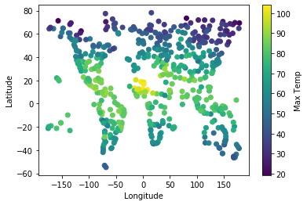

This website is a Reflection of weather (temperature, cloudiness, wind speed, and humidity)
from over 500 randomly choosen cities around the Earth. The data collected from 'OpenWeather API'
was used to gain a greater understanding of weather and its relation to the the eqautor.